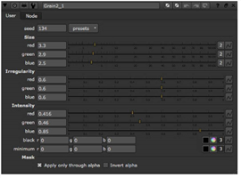

Nuke 提供了几个用于创建合成谷物的节点: 抖动、谷物、扫描谷物，如果你有一个 NukeX 许可证，F_ReGrain。其中，抖动是最粗糙的 -- 它基本上允许您指定每个通道的噪声量。
谷物包括用于匹配胶片的预设，以及用于控制生成的谷物和背板之间的混合的方法。ScannedGrain 提供电影股票预设，加上合成谷物控制应用实用谷物。
F_ReGrain，用于 NukeX ,旨在从一幅图像中采样谷物区域，然后生成无限数量的这种谷物，其统计数据与原始数据完全相同。然后，这个新颗粒可以应用于另一个图像。请参阅 使用 F_ReGrain 欲了解更多信息。
| 1。 | 单击 绘制 > 谷物 在脚本中的适当位置插入颗粒节点。 |
| 2. | 将查看器连接到谷物节点的输出，以便您可以看到更改的效果。 |

| 3. | 从 预设 下拉菜单中，选择要匹配的胶片之一。 |
| 4. | 调整 尺寸 用于收缩或放大颗粒的红色、绿色和蓝色通道的滑块。 |
| 5. | 调整 不规则 滑块根据不同的通道来增加或减少谷物的随机质量。 |
| 6. | 调整 强度 滑块增加或减少纹理与原始图像的对比度。 |
|
|